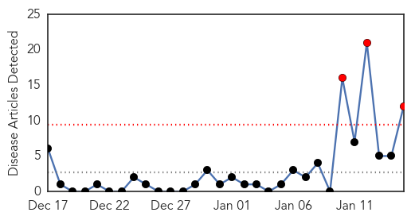
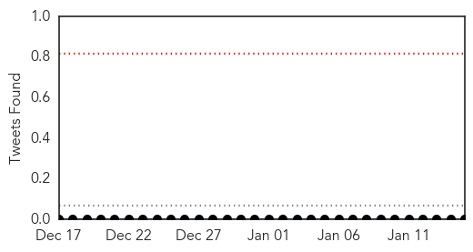
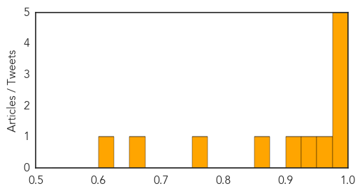
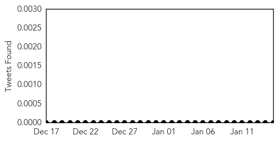
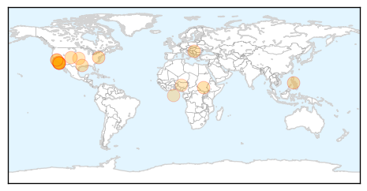

Cholera
30-Day Web Trend
3 alerts, 0 warnings

30-Day Twitter Trend
0 alerts, 0 warnings

Article Locations

Article Confidences
Top Articles:
- 0.996
- Haiti Cholera Response December 2014 - Haiti
- 0.990
- Cholera Kills 20 in Nigeria — Naharnet
- 0.990
- 20 Dies In Nigeria’s Cholera Outbreak
- 0.989
- Malawi floods raise fears of cholera outbreak, poor harvest
- 0.983
- Malawi floods raise fears of cholera outbreak, poor harvest
- 0.975
- Cholera kills 20 in Rivers
- 0.936
- Aurangabad plagued by water contamination
- 0.920
- Cholera outbreak kills 20 in Rivers
- 0.851
- 5 Years After Haiti's Earthquake, Where Did The $13.5 Billion Go?
- 0.771
- 20 Die in Cholera Outbreak in Rivers, Articles
- 0.664
- Malawi deploys military as floods leave 100,000 homeless
- 0.614
- Belarus restricts pork import from Kiev Oblast
Top Tweets:
-
No tweets found for Jan 15, 2015
Measles
30-Day Web Trend
7 alerts, 3 warnings

30-Day Twitter Trend
0 alerts, 0 warnings

Article Locations
Article Confidences

Top Articles:
- 0.994
- Latest measles case raises questions, and we have some answers
- 0.984
- Measles Cases Connected to Disney Theme Parks Mounting
- 0.960
- Fauci: Measles outbreaks not uncommon in U.S.
- 0.959
- 32 Confirmed Cases of Measles Linked to Disney Parks
- 0.945
- The California Measles Outbreak and the Least-Happy Debate on Earth
- 0.923
- Epidemic of measles in Belgrade officially confirmed
- 0.915
- US officials try to contain measles outbreak that started at Disneyland
- 0.902
- Sharp Health Care closed due to Measles Scare
- 0.873
- To Vaccinate Or Not Vaccinate « CBS Minnesota
- 0.871
- 13 more California measles cases tied to Disney outbreak
- 0.855
- 10 local confirmed cases of measles related to Disneyland outbre
- 0.837
- Disneyland measles outbreak largest in California in 15 years
- 0.799
- Urgent Care in La Mesa Open Following Measles Scare
- 0.758
- Measles infections soar, doctors urge vaccinations
- 0.732
- Adamawa IDPs’ Camps Record Outbreak Of Measles
- 0.674
- Exposure period for measles over, state health officials say
- 0.638
- San Diego now has 10 measles cases, nine of them unvaccinated children, officials say
- 0.604
- South Pasadena Woman Could Be Jailed For Refusing Measles Quarantine
Top Tweets:
-
No tweets found for Jan 15, 2015